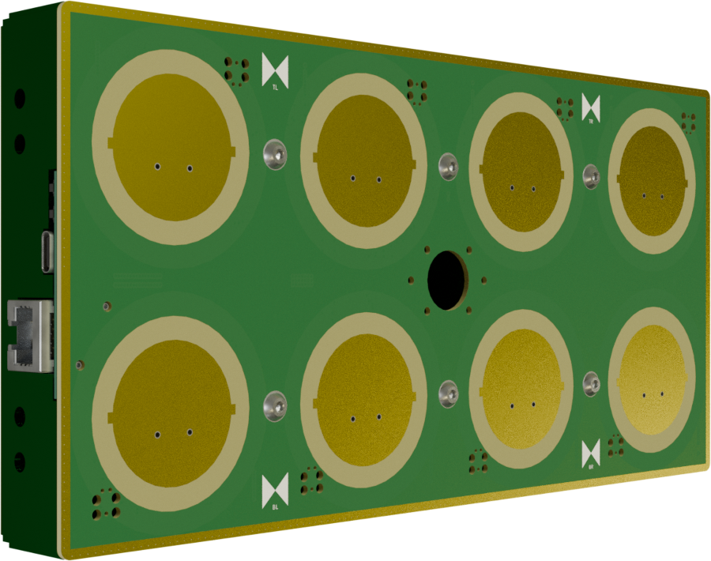

<main class="flex-shrink-0">
	<div class="container">
		<div class="row py-3 cols-12">
			<h1 class="px-0">Setup & Getting Started</h1>
		</div>

		<h2>Technical Specifications</h2>
		<div class="row py-4 cols-12 justify-content-md-center">
			<div class="col col-12 col-md-6 col-xl-5 text-center">
				
			</div>
			<div class="col col-12 col-md-6 col-xl-5 text-center">
				<div class="mt-3">
					<b>Details</b>
					<ul class="text-start">
						<li>Provides phase-coherent CSI for 802.11g/n/ax packets</li>
						<li>Bandwidth: 20 MHz, or 40 MHz for 802.11n channel bonding</li>
						<li>100BASE-TX Ethernet with PoE for data / power</li>
						<li>IEEE 802.3at Type 1 compliant PoE (class 3)</li>
						<li>8&times; dual-polarized patch antennas (mixed linear / circular)</li>
						<li>Reference signal input / output for coherent multi-array setups</li>
						<li>&lambda; / 2 antenna spacing (60mm)</li>
						<li>Power Consumption: ~3.5W</li>
						<li><i>Further details to be published!</i></li>
					</ul>
				</div>
			</div>
		</div>

		<section class="border rounded p-4 my-4">
			<h2 class="mt-0"><span class="badge bg-primary me-2">1</span>Power on ESPARGOS</h2>
			<div class="row py-4 cols-12 justify-content-md-center">
				<div class="col col-12 col-lg-9 col-xl-7 text-center">
					
				</div>
			</div>
			<p>You have two options to power ESPARGOS:</p>
			<ul>
				<li><b>Power over Ethernet (PoE)</b>: Connect an IEEE 802.3at Type 1 compliant PoE injector or switch to the Ethernet port of ESPARGOS.
					ESPARGOS will automatically detect the PoE power and use it to power both the controller and sensor boards.
					This is the most convenient way to power ESPARGOS, as it requires only a single cable for both power and data.</li>
				<li><b>USB-C</b>: Connect a USB-C power supply to ESPARGOS (or just connect it to your computer). Make sure it can provide at least 1A of current at 5V.</li>
			</ul>
		</section>

		<section id="connect" class="border rounded p-4 my-4">
			<h2 class="mt-0"><span class="badge bg-primary me-2">2</span>Connect to ESPARGOS</h2>
			<p>Choose one of the following connection methods before opening the web interface:</p>
			<div class="row mt-3">
				<div class="col col-12 col-md-6">
					<div class="h-100 border rounded p-3">
						<h3 class="h5 mt-0">Over Ethernet</h3>
						<p>The default IP address of ESPARGOS is <code>192.168.1.2/16</code>.</p>
						<ul>
							<li>Connect your computer to ESPARGOS. Make sure there is no other device in the network using IP address <code>192.168.1.2</code>.</li>
							<li>Change your computer's IP address settings to:</li>
							<ul>
								<li>IP address: <code>192.168.1.100</code></li>
								<li>Subnet Mask: <code>255.255.0.0</code></li>
							</ul>
							<li>Open <a href="http://192.168.1.2">http://192.168.1.2</a></li>
						</ul>
						<div class="alert alert-info">If you can't connect to ESPARGOS, try to perform a factory reset (see below) to change the network settings of ESPARGOS back to their default values.</div>
					</div>
				</div>
				<div class="col col-12 col-md-6 mt-3 mt-md-0">
					<div class="h-100 border rounded p-3">
						<h3 class="h5 mt-0">Over USB</h3>
						<p>Use the UART router script from <a href="https://github.com/ESPARGOS/pyespargos">pyespargos</a>. If you do not have pyespargos installed yet, jump forward to <a href="#pyespargos">step 4</a> first.</p>
						<ul>
							<li>Connect ESPARGOS to your computer via USB-C.</li>
							<li>ESPARGOS will appear as a serial (UART) device on your computer. By default, this serial device will only show debug output, but ESPARGOS can be put in a special mode that tunnels traffic through UART.</li>
							<li>For this, run the UART router:</li>
						</ul>
						<div class="d-flex justify-content-center mb-3 mt-0">
							<pre><code>python tools/espargos-uart-router.py uart:/dev/ttyUSB0</code></pre>
						</div>
						<ul>
							<li>Replace <code>/dev/ttyUSB0</code> with the serial device used by ESPARGOS on your computer (could also be e.g. <code>/dev/ttyACM0</code>, or <code>COM3</code>).</li>
							<li>Open <a href="http://127.0.0.1:8400">http://127.0.0.1:8400</a> (the IP / port displayed by the UART router).</li>
						</ul>
					</div>
				</div>
			</div>
		</section>

		<section class="border rounded p-4 my-4">
			<h2 class="mt-0"><span class="badge bg-primary me-2">3</span>Access Web Interface</h2>
			<div class="row py-4 cols-12 justify-content-md-center">
				<div class="col col-12 col-lg-10 col-xl-5">
					<p>
						The ESPARGOS controller runs a web server, which provides a WebSocket / HTTP API for controlling ESPARGOS and streaming CSI data, as well as a user-friendly web interface to configure ESPARGOS.
					</p>
					<p>Open the address matching the connection method you chose:</p>
					<ul>
						<li><b>Ethernet:</b> <a href="http://192.168.1.2">http://192.168.1.2</a></li>
						<li><b>USB UART router:</b> <a href="http://127.0.0.1:8400">http://127.0.0.1:8400</a></li>
					</ul>
				</div>
				<div class="col col-12 col-lg-10 col-xl-7 text-center">
					
				</div>
			</div>
			<div class="row py-4 cols-12 justify-content-md-center">
				<div class="col col-12 col-lg-10 col-xl-7 text-center">
					
				</div>
				<div class="col col-12 col-lg-10 col-xl-5 mt-3">
					The web interface allows you to view live CSI data and change settings like:
					<ul>
						<li>Network configuration and hostname (ESPARGOS supports mDNS)</li>
						<li>WiFi settings (channel, power) and calibration behavior</li>
						<li>Perform a factory reset</li>
						<li>Upload or automatically download <a href="/firmware">firmware updates</a> (only available via Ethernet connection)</li>
					</ul>
					<div class="alert alert-warning">You must make sure to select a country code that matches your location. Please note that not all channels will work depending on the country code.</div>
				</div>
			</div>
		</section>

		<section id="pyespargos" class="border rounded p-4 my-4">
			<h2 class="mt-0"><span class="badge bg-primary me-2">4</span>Install and use pyespargos</h2>
			<div class="row py-3 cols-12 align-items-center justify-content-md-center">
				<div class="col col-12 col-md-3 col-xl-2 text-center mb-4">
					
				</div>
				<div class="col col-12 col-md-12 col-xl-10 mt-3 mt-md-0">
					<p>
						Use <a href="https://github.com/ESPARGOS/pyespargos">pyespargos</a> to capture CSI data from Python, combine multiple ESPARGOS arrays, calibrate measurements and run the included demo applications.
					</p>
					<p>
						Installation instructions, examples and demos are maintained in the <a href="https://github.com/ESPARGOS/pyespargos#installation">pyespargos README</a>.
					</p>
					<p>
						pyespargos supports both the Ethernet and USB connection methods described above:
						<ul>
							<li><b>Ethernet:</b> pyespargos can connect directly to the IP address of ESPARGOS (e.g., <code>./demos/instantaneous-csi/instantaneous-csi.py 192.168.1.2</code>).</li>
							<li><b>USB UART router:</b> pyespargos can connect to the serial device used by ESPARGOS (e.g., <code>./demos/instantaneous-csi/instantaneous-csi.py uart:/dev/ttyUSB0</code>). The UART router must not run simultaneously.</li>
						</ul>
					</p>
				</div>
			</div>
		</section>

		<h2 class="mt-4">Reboot and Factory Reset</h2>
		<div class="row py-4 cols-12 justify-content-md-center gap-3">
			<div class="col col-12 col-md-6 col-lg-6 col-xl-7">
				<p>
					To simply reboot ESPARGOS, use the web interface, use the reboot button or power cycle the device.
					This will wipe ephemeral data, but keep all static settings intact.
				</p>
				<p>
					The easiest way to perform a factory reset is to use the web interface.
					If you cannot access the web interface, press and hold the button right next to the USB-C connector for 5-10 seconds until the controller reboots.
					The factory reset will wipe all settings (including network settings), but it will not revert to an older firmware version.
				</p>
				<p>
					If you suspect that the controller firmware is corrupted, please consider <a href="/firmware#recovery">firmware recovery options</a>.
				</p>
			</div>
			<div class="col col-12 col-md-5 col-lg-5 col-xl-4 text-center">
				
			</div>
		</div>

		<h2>Reference Signal Output / Input</h2>
		
		<div class="row py-4 cols-12 justify-content-md-center gap-3">
			<div class="col col-12 col-md-5 col-lg-5 col-xl-3 text-center">
				
			</div>
			<div class="col col-12 col-md-6 col-lg-6 col-xl-8">
				<p>
					There are two SMA connectors on the back of ESPARGOS:
					<ul>
						<li>The <b>SYNC OUT</b> connector: If ESPARGOS is in <b>Master mode</b>, outputs the 40MHz reference signal generated by the controller board, a 3.3V DC bias voltage (e.g., for powering active splitters) as well as the 2.4GHz phase reference signal, if currently active.</li>
						<li>The <b>SYNC IN</b> connector: If ESPARGOS is in <b>Slave mode</b> or <b>Master mode</b>, expects an external 40MHz reference signal and the 2.4GHz phase reference signal, if used.</li>
					</ul>
				</p>
			</div>
		</div>

		<!-- TODO: Drawings of different setup schematics -->

		<h2>Dimensions and Mounting Options</h2>
		ESPARGOS is 240mm wide, 120mm high and 26.5mm thick.
		
		<ul class="my-3">
			<li><b>VESA Mount</b>:
			ESPARGOS provides standard-compatible 100mm VESA mounting holes for M4 screws.
			The following drawing may be helpful:</li>
			<div class="row py-4 cols-12 justify-content-md-center">
				<div class="col col-12 col-lg-10 col-xl-8 text-center">
					
				</div>
			</div>
			<li><b>1/4" Tripod Mount:</b> On the lower side of the case, there is a standard 1/4"-20 tripod mount hole for mounting ESPARGOS on camera tripods or other compatible mounts:</li>
			<div class="row py-4 cols-12 justify-content-md-center">
				<div class="col col-12 col-lg-10 col-xl-8 text-center">
					
				</div>
			</div>
			<li><b>Combined Arrays:</b> There are two pairs of M4-sized holes on all four sides of the ESPARGOS case, which can be used to bolt multiple ESPARGOS units together to form larger arrays.
				One of the holes in the pair could be used for mechanical assembly, the other one can be used to run a small coaxial cable for synchronization.</li>
		</ul>
	</div>
</div>

</main>
